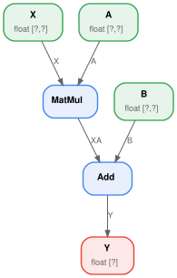
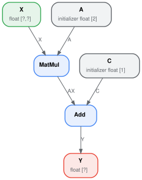
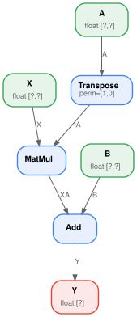
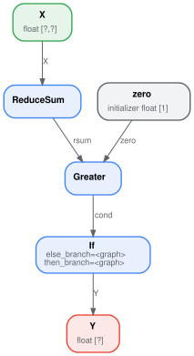
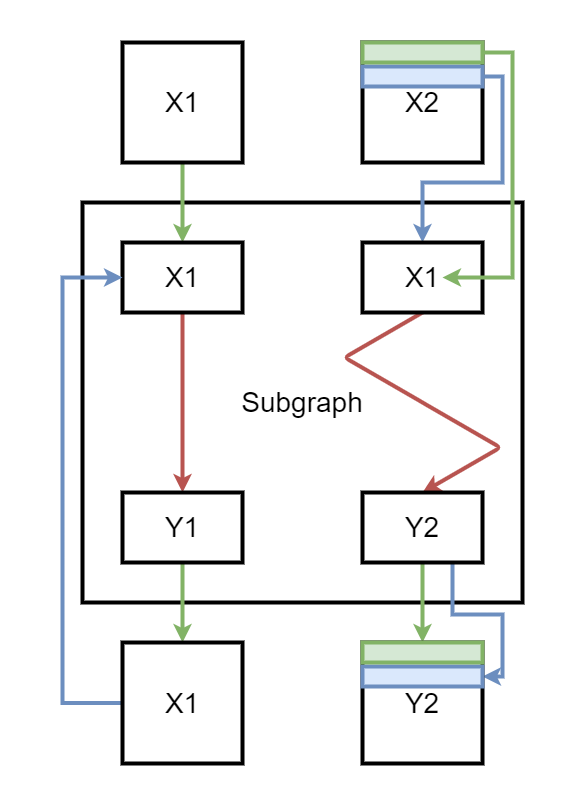

ONNX with Python#
Tip
The pages on this site illustrate how to use onnx-light to inspect
and manipulate ONNX models. The same examples can be ported back to
the standard onnx package by replacing onnx_light.onnx_lib
with onnx in every import. The
ir-py project provides yet another
set of Python APIs for creating and manipulating ONNX models, with a
more modern and ergonomic interface compared to the APIs described here.
The next sections highlight the main functions used to build an ONNX
graph with the Python API onnx-light exposes through
onnx_light.onnx_lib.
A simple example: a linear regression#
The linear regression is the simplest model in machine learning, described
by the expression \(Y = XA + B\). We can see it as a function of three
variables \(Y = f(X, A, B)\) decomposed into y = Add(MatMul(X, A),
B). That’s what we need to represent with ONNX operators. The first
thing is to implement a function with ONNX operators. ONNX is strongly
typed: shape and type must be defined for both inputs and outputs of the
function. We need four functions to build the graph:
make_tensor_value_info <onnx_light.onnx.helper.make_tensor_value_info>`(): declares a variable (input or output) given its shape and type;make_node: creates a node defined by an operation (an operator type), its inputs and outputs;make_graph: a function to create an ONNX graph with the objects created by the two previous functions;make_model: a last function which merges the graph and additional metadata.
All along the creation, we need to give a name to every input, output of every node of the graph. Inputs and outputs of the graph are defined by ONNX objects, strings are used to refer to intermediate results. This is how it looks like.
<<<
# imports
from onnx_light.onnx_lib import TensorProto
from onnx_light.onnx.helper import (
make_model,
make_node,
make_graph,
make_tensor_value_info,
)
from onnx_light.onnx_lib.checker import check_model
# inputs
# 'X' is the name, TensorProto.FLOAT the type, [None, None] the shape
X = make_tensor_value_info("X", TensorProto.FLOAT, [None, None])
A = make_tensor_value_info("A", TensorProto.FLOAT, [None, None])
B = make_tensor_value_info("B", TensorProto.FLOAT, [None, None])
# outputs, the shape is left undefined
Y = make_tensor_value_info("Y", TensorProto.FLOAT, [None])
# nodes
# It creates a node defined by the operator type MatMul,
# 'X', 'A' are the inputs of the node, 'XA' the output.
node1 = make_node("MatMul", ["X", "A"], ["XA"])
node2 = make_node("Add", ["XA", "B"], ["Y"])
# from nodes to graph
# the graph is built from the list of nodes, the list of inputs,
# the list of outputs and a name.
graph = make_graph(
[node1, node2], "lr", [X, A, B], [Y] # nodes # a name # inputs
) # outputs
# onnx graph
# there is no metadata in this case.
onnx_model = make_model(graph)
# Let's check the model is consistent,
# this function is described in section
# Checker and Shape Inference.
check_model(onnx_model)
# the work is done, let's display it...
print(onnx_model)
>>>
{ ir_version: 14 opset_import: [ { version: 28 } ] graph: { name: "lr" input: [ { name: "X" type: { tensor_type: { elem_type: 1 shape: { dim: [ { } { } ] } } } } { name: "A" type: { tensor_type: { elem_type: 1 shape: { dim: [ { } { } ] } } } } { name: "B" type: { tensor_type: { elem_type: 1 shape: { dim: [ { } { } ] } } } } ] output: [ { name: "Y" type: { tensor_type: { elem_type: 1 shape: { dim: [ { } ] } } } } ] node: [ { input: [ "X" "A" ] output: [ "XA" ] op_type: "MatMul" } { input: [ "XA" "B" ] output: [ "Y" ] op_type: "Add" } ] } }

An empty shape (None) means any shape, a shape defined as
[None, None] tells this object is a tensor with two dimensions
without any further precision. The ONNX graph can also be inspected by
looking into the fields of each object of the graph.
<<<
from onnx_light.onnx_lib import TensorProto
from onnx_light.onnx.helper import (
make_model,
make_node,
make_graph,
make_tensor_value_info,
)
from onnx_light.onnx_lib.checker import check_model
def shape2tuple(shape):
return tuple(getattr(d, "dim_value", 0) for d in shape.dim)
X = make_tensor_value_info("X", TensorProto.FLOAT, [None, None])
A = make_tensor_value_info("A", TensorProto.FLOAT, [None, None])
B = make_tensor_value_info("B", TensorProto.FLOAT, [None, None])
Y = make_tensor_value_info("Y", TensorProto.FLOAT, [None])
node1 = make_node("MatMul", ["X", "A"], ["XA"])
node2 = make_node("Add", ["XA", "B"], ["Y"])
graph = make_graph([node1, node2], "lr", [X, A, B], [Y])
onnx_model = make_model(graph)
check_model(onnx_model)
# the list of inputs
print("** inputs **")
print(onnx_model.graph.input)
# in a more nicely format
print("** inputs **")
for obj in onnx_model.graph.input:
print(
"name=%r dtype=%r shape=%r"
% (
obj.name,
obj.type.tensor_type.elem_type,
shape2tuple(obj.type.tensor_type.shape),
)
)
# the list of outputs
print("** outputs **")
print(onnx_model.graph.output)
# in a more nicely format
print("** outputs **")
for obj in onnx_model.graph.output:
print(
"name=%r dtype=%r shape=%r"
% (
obj.name,
obj.type.tensor_type.elem_type,
shape2tuple(obj.type.tensor_type.shape),
)
)
# the list of nodes
print("** nodes **")
print(onnx_model.graph.node)
# in a more nicely format
print("** nodes **")
for node in onnx_model.graph.node:
print(
"name=%r type=%r input=%r output=%r"
% (node.name, node.op_type, node.input, node.output)
)
>>>
** inputs **
[{ name: "X" type: { tensor_type: { elem_type: 1 shape: { ..., { name: "A" type: { tensor_type: { elem_type: 1 shape: { ..., { name: "B" type: { tensor_type: { elem_type: 1 shape: { ...]
** inputs **
name='X' dtype=DataType.FLOAT shape=(None, None)
name='A' dtype=DataType.FLOAT shape=(None, None)
name='B' dtype=DataType.FLOAT shape=(None, None)
** outputs **
[{ name: "Y" type: { tensor_type: { elem_type: 1 shape: { ...]
** outputs **
name='Y' dtype=DataType.FLOAT shape=(None,)
** nodes **
[{ input: [ "X" "A" ] output: [ "XA" ] op_type: "MatMul" }, { input: [ "XA" "B" ] output: [ "Y" ] op_type: "Add" }]
** nodes **
name='' type='MatMul' input=['X', 'A'] output=['XA']
name='' type='Add' input=['XA', 'B'] output=['Y']
The tensor type is an integer value (=1 for FLOAT). The helper
function onnx_light.onnx.helper.tensor_dtype_to_np_dtype()
converts the integer to its corresponding numpy data type (float32
for 1).
<<<
from onnx_light.onnx_lib import TensorProto
from onnx_light.onnx.helper import tensor_dtype_to_np_dtype
np_dtype = tensor_dtype_to_np_dtype(TensorProto.FLOAT)
print(f"The converted numpy dtype for TensorProto.FLOAT is {np_dtype}.")
>>>
The converted numpy dtype for TensorProto.FLOAT is float32.
Serialization#
onnx-light adds the necessary definitions to describe a machine learning model and most of the time, ONNX is used to serialize or deserialize a model. The first section addresses this need. The second section introduces the serialization and deserialization of data such as tensors, sparse tensors…
Model Serialization#
The model needs to be saved to be deployed. It
minimizes the space needed to save the graph on disk. Every object in
onnx can be serialized with method SerializeToString(). That’s also
the case for the whole model.
<<<
from onnx_light.onnx_lib import TensorProto
from onnx_light.onnx.helper import (
make_model,
make_node,
make_graph,
make_tensor_value_info,
)
from onnx_light.onnx_lib.checker import check_model
X = make_tensor_value_info("X", TensorProto.FLOAT, [None, None])
A = make_tensor_value_info("A", TensorProto.FLOAT, [None, None])
B = make_tensor_value_info("B", TensorProto.FLOAT, [None, None])
Y = make_tensor_value_info("Y", TensorProto.FLOAT, [None])
node1 = make_node("MatMul", ["X", "A"], ["XA"])
node2 = make_node("Add", ["XA", "B"], ["Y"])
graph = make_graph([node1, node2], "lr", [X, A, B], [Y])
onnx_model = make_model(graph)
check_model(onnx_model)
# The serialization
with open("linear_regression.onnx", "wb") as f:
f.write(onnx_model.SerializeToString())
# display
print(onnx_model)
>>>
{ ir_version: 14 opset_import: [ { version: 28 } ] graph: { name: "lr" input: [ { name: "X" type: { tensor_type: { elem_type: 1 shape: { dim: [ { } { } ] } } } } { name: "A" type: { tensor_type: { elem_type: 1 shape: { dim: [ { } { } ] } } } } { name: "B" type: { tensor_type: { elem_type: 1 shape: { dim: [ { } { } ] } } } } ] output: [ { name: "Y" type: { tensor_type: { elem_type: 1 shape: { dim: [ { } ] } } } } ] node: [ { input: [ "X" "A" ] output: [ "XA" ] op_type: "MatMul" } { input: [ "XA" "B" ] output: [ "Y" ] op_type: "Add" } ] } }
The graph can be restored with function onnx_light.onnx.load().
onnx-light exposes its own loader (which supports parallel
tensor parsing, zero-copy buffers and external data; see
Complex loading and saving scenarios).
<<<
from onnx_light.onnx import load
onnx_model = load("linear_regression.onnx")
# display
print(onnx_model)
>>>
{ ir_version: 14 opset_import: [ { domain: "" version: 28 } ] graph: { name: "lr" input: [ { name: "X" type: { tensor_type: { elem_type: 1 shape: { dim: [ { } { } ] } } } } { name: "A" type: { tensor_type: { elem_type: 1 shape: { dim: [ { } { } ] } } } } { name: "B" type: { tensor_type: { elem_type: 1 shape: { dim: [ { } { } ] } } } } ] output: [ { name: "Y" type: { tensor_type: { elem_type: 1 shape: { dim: [ { } ] } } } } ] node: [ { input: [ "X" "A" ] output: [ "XA" ] op_type: "MatMul" } { input: [ "XA" "B" ] output: [ "Y" ] op_type: "Add" } ] } }
It looks exactly the same. With the standard onnx package, any model
can be serialized this way unless they are bigger than 2 GB: protobuf is
limited to messages smaller than this threshold. onnx-light lifts
that limit because it does not rely on the protobuf C++ runtime — see
Protobuf format applied to ONNX for details.
Data Serialization#
The serialization of tensors usually happens like the following:
<<<
import numpy
from onnx_light.onnx.numpy_helper import from_array
numpy_tensor = numpy.array([0, 1, 4, 5, 3], dtype=numpy.float32)
print(type(numpy_tensor))
onnx_tensor = from_array(numpy_tensor)
print(type(onnx_tensor))
serialized_tensor = onnx_tensor.SerializeToString()
print(type(serialized_tensor))
with open("saved_tensor.pb", "wb") as f:
f.write(serialized_tensor)
>>>
<class 'numpy.ndarray'>
<class 'onnx_light.onnx_py._onnxpyprotoop.TensorProto'>
<class 'bytes'>
And the deserialization like:
<<<
from onnx_light.onnx_lib import TensorProto
from onnx_light.onnx.numpy_helper import to_array
with open("saved_tensor.pb", "rb") as f:
serialized_tensor = f.read()
print(type(serialized_tensor))
onnx_tensor = TensorProto()
onnx_tensor.ParseFromString(serialized_tensor)
print(type(onnx_tensor))
numpy_tensor = to_array(onnx_tensor)
print(numpy_tensor)
>>>
<class 'bytes'>
<class 'onnx_light.onnx_py._onnxpyprotoop.TensorProto'>
[0. 1. 4. 5. 3.]
The same schema can be used for any of the *Proto message types:
<<<
import pprint
from onnx_light import onnx_lib
pprint.pprint([p for p in dir(onnx_lib) if p.endswith("Proto") and p[0] != "_"])
>>>
['AttributeProto',
'DeviceConfigurationProto',
'FunctionProto',
'GraphProto',
'IntIntListEntryProto',
'MapProto',
'ModelProto',
'NodeDeviceConfigurationProto',
'NodeProto',
'OperatorSetIdProto',
'OptionalProto',
'SequenceProto',
'ShardedDimProto',
'ShardingSpecProto',
'SimpleShardedDimProto',
'SparseTensorProto',
'StringStringEntryProto',
'TensorProto',
'TensorShapeProto',
'TypeProto',
'ValueInfoProto']
Initializer, default value#
The previous model assumed the coefficients of the linear regression
were also inputs of the model. That’s not very convenient. They should be
part of the model itself as constants or initializers to follow ONNX
semantics. The next example modifies the previous one to change inputs
A and B into initializers. The package implements two functions
to convert from numpy into onnx and the other way around.
onnx_light.onnx.numpy_helper.to_array(): converts from onnx to numpy;onnx_light.onnx.numpy_helper.from_array(): converts from numpy to onnx.
<<<
import numpy
from onnx_light.onnx_lib import numpy_helper, TensorProto
from onnx_light.onnx.helper import (
make_model,
make_node,
make_graph,
make_tensor_value_info,
)
from onnx_light.onnx_lib.checker import check_model
# initializers
value = numpy.array([0.5, -0.6], dtype=numpy.float32)
A = numpy_helper.from_array(value, name="A")
value = numpy.array([0.4], dtype=numpy.float32)
C = numpy_helper.from_array(value, name="C")
# the part which does not change
X = make_tensor_value_info("X", TensorProto.FLOAT, [None, None])
Y = make_tensor_value_info("Y", TensorProto.FLOAT, [None])
node1 = make_node("MatMul", ["X", "A"], ["AX"])
node2 = make_node("Add", ["AX", "C"], ["Y"])
graph = make_graph([node1, node2], "lr", [X], [Y], [A, C])
onnx_model = make_model(graph)
check_model(onnx_model)
print(onnx_model)
>>>
{ ir_version: 14 opset_import: [ { version: 28 } ] graph: { name: "lr" input: [ { name: "X" type: { tensor_type: { elem_type: 1 shape: { dim: [ { } { } ] } } } } ] output: [ { name: "Y" type: { tensor_type: { elem_type: 1 shape: { dim: [ { } ] } } } } ] node: [ { input: [ "X" "A" ] output: [ "AX" ] op_type: "MatMul" } { input: [ "AX" "C" ] output: [ "Y" ] op_type: "Add" } ] initializer: [ { dims: [2] data_type: 1 name: "A" raw_data: 0000003F9A9919BF } { dims: [1] data_type: 1 name: "C" raw_data: CDCCCC3E } ] } }

Again, it is possible to go through the onnx structure to check what the initializers look like.
<<<
import numpy
from onnx_light.onnx_lib import numpy_helper, TensorProto
from onnx_light.onnx.helper import (
make_model,
make_node,
make_graph,
make_tensor_value_info,
)
from onnx_light.onnx_lib.checker import check_model
# initializers
value = numpy.array([0.5, -0.6], dtype=numpy.float32)
A = numpy_helper.from_array(value, name="A")
value = numpy.array([0.4], dtype=numpy.float32)
C = numpy_helper.from_array(value, name="C")
# the part which does not change
X = make_tensor_value_info("X", TensorProto.FLOAT, [None, None])
Y = make_tensor_value_info("Y", TensorProto.FLOAT, [None])
node1 = make_node("MatMul", ["X", "A"], ["AX"])
node2 = make_node("Add", ["AX", "C"], ["Y"])
graph = make_graph([node1, node2], "lr", [X], [Y], [A, C])
onnx_model = make_model(graph)
check_model(onnx_model)
print("** initializer **")
for init in onnx_model.graph.initializer:
print(init)
>>>
** initializer **
{ dims: [2] data_type: 1 name: "A" raw_data: 0000003F9A9919BF }
{ dims: [1] data_type: 1 name: "C" raw_data: CDCCCC3E }
The type is defined as an integer as well, with the same meaning. In this
second example, there is only one input left. Inputs A and B were
removed. They could be kept; in that case, they are optional: every
initializer sharing the same name as an input is considered as a default
value. It replaces the input if the latter is not given.
Attributes#
Some operators need attributes such as the Transpose operator. Let’s
build the graph for expression \(y = XA' + B\) or
y = Add(MatMul(X, Transpose(A)) + B). Transpose needs an attribute
defining the permutation of axes: perm=[1, 0]. It is added as a
named attribute in function make_node().
<<<
from onnx_light.onnx_lib import TensorProto
from onnx_light.onnx.helper import (
make_model,
make_node,
make_graph,
make_tensor_value_info,
)
from onnx_light.onnx_lib.checker import check_model
# unchanged
X = make_tensor_value_info("X", TensorProto.FLOAT, [None, None])
A = make_tensor_value_info("A", TensorProto.FLOAT, [None, None])
B = make_tensor_value_info("B", TensorProto.FLOAT, [None, None])
Y = make_tensor_value_info("Y", TensorProto.FLOAT, [None])
# added
node_transpose = make_node("Transpose", ["A"], ["tA"], perm=[1, 0])
# unchanged except A is replaced by tA
node1 = make_node("MatMul", ["X", "tA"], ["XA"])
node2 = make_node("Add", ["XA", "B"], ["Y"])
# node_transpose is added to the list
graph = make_graph([node_transpose, node1, node2], "lr", [X, A, B], [Y])
onnx_model = make_model(graph)
check_model(onnx_model)
# the work is done, let's display it...
print(onnx_model)
>>>
{ ir_version: 14 opset_import: [ { version: 28 } ] graph: { name: "lr" input: [ { name: "X" type: { tensor_type: { elem_type: 1 shape: { dim: [ { } { } ] } } } } { name: "A" type: { tensor_type: { elem_type: 1 shape: { dim: [ { } { } ] } } } } { name: "B" type: { tensor_type: { elem_type: 1 shape: { dim: [ { } { } ] } } } } ] output: [ { name: "Y" type: { tensor_type: { elem_type: 1 shape: { dim: [ { } ] } } } } ] node: [ { input: [ "A" ] output: [ "tA" ] op_type: "Transpose" attribute: [ { perm: [1, 0] } ] } { input: [ "X" "tA" ] output: [ "XA" ] op_type: "MatMul" } { input: [ "XA" "B" ] output: [ "Y" ] op_type: "Add" } ] } }

The whole list of make functions is the following.
<<<
import pprint
from onnx_light.onnx_lib import helper
pprint.pprint([k for k in dir(helper) if k.startswith("make")])
>>>
['make_attribute',
'make_attribute_ref',
'make_empty_tensor_value_info',
'make_function',
'make_graph',
'make_map',
'make_map_type_proto',
'make_model',
'make_node',
'make_operatorsetid',
'make_opsetid',
'make_optional',
'make_optional_type_proto',
'make_sequence',
'make_sequence_type_proto',
'make_sparse_tensor',
'make_sparse_tensor_type_proto',
'make_sparse_tensor_value_info',
'make_tensor',
'make_tensor_sequence_value_info',
'make_tensor_type_proto',
'make_tensor_value_info',
'make_value_info']
Opset and metadata#
Let’s load the ONNX file previously created and check what kind of metadata it has.
<<<
from onnx_light.onnx import load
onnx_model = load("linear_regression.onnx")
for field in [
"doc_string",
"domain",
"functions",
"ir_version",
"metadata_props",
"model_version",
"opset_import",
"producer_name",
"producer_version",
]:
print(field, getattr(onnx_model, field))
>>>
doc_string
domain
functions []
ir_version 14
metadata_props []
model_version None
opset_import [{ domain: "" version: 28 }]
producer_name
producer_version
Most of them are empty because they were not filled when the ONNX graph was created. Two of them have a value:
<<<
from onnx_light.onnx import load
onnx_model = load("linear_regression.onnx")
print("ir_version:", onnx_model.ir_version)
for opset in onnx_model.opset_import:
print("opset domain=%r version=%r" % (opset.domain, opset.version))
>>>
ir_version: 14
opset domain='' version=28
IR defines the version of the ONNX language. Opset defines the version
of operators being used. Without any precision, ONNX uses the latest
version available coming from the installed package. Another one can be
used.
<<<
from onnx_light.onnx import load
onnx_model = load("linear_regression.onnx")
del onnx_model.opset_import[:]
opset = onnx_model.opset_import.add()
opset.domain = ""
opset.version = 14
for opset in onnx_model.opset_import:
print("opset domain=%r version=%r" % (opset.domain, opset.version))
>>>
opset domain='' version=14
Any opset can be used as long as all operators are defined the way ONNX specifies them. Version 5 of operator Reshape defines the shape as an input and not as an attribute like in version 1. The opset tells which specifications is followed while describing the graph.
The other metadata can be used to store any information, to describe the way the model was generated, or as a way to distinguish a model from another with a version number.
<<<
from onnx_light.onnx import load
from onnx_light.onnx_lib import helper
onnx_model = load("linear_regression.onnx")
onnx_model.model_version = 15
onnx_model.producer_name = "something"
onnx_model.producer_version = "some other thing"
onnx_model.doc_string = "documentation about this model"
data = dict(key1="value1", key2="value2")
helper.set_model_props(onnx_model, data)
print(onnx_model)
>>>
{ ir_version: 14 opset_import: [ { domain: "" version: 28 } ] producer_name: "something" producer_version: "some other thing" model_version: 15 doc_string: "documentation about this model" graph: { name: "lr" input: [ { name: "X" type: { tensor_type: { elem_type: 1 shape: { dim: [ { } { } ] } } } } { name: "A" type: { tensor_type: { elem_type: 1 shape: { dim: [ { } { } ] } } } } { name: "B" type: { tensor_type: { elem_type: 1 shape: { dim: [ { } { } ] } } } } ] output: [ { name: "Y" type: { tensor_type: { elem_type: 1 shape: { dim: [ { } ] } } } } ] node: [ { input: [ "X" "A" ] output: [ "XA" ] op_type: "MatMul" } { input: [ "XA" "B" ] output: [ "Y" ] op_type: "Add" } ] } metadata_props: [ { key: "key1" value: "value1" } { key: "key2" value: "value2" } ] }
Field training_info can be used to store additional graphs.
Subgraph: test and loops#
They are usually grouped in a category called control flow. It is usually better to avoid them as they are not as efficient as matrix operations, which are much faster and optimized.
If#
A test can be implemented with operator If. It executes one subgraph or another depending on one boolean. This is not used very often as a function usually needs the result of many comparisons in a batch. The following example computes the sum of all floats in a matrix and, based on the sign, returns 1 or -1.
<<<
import numpy
from onnx_light import onnx_lib
from onnx_light.onnx.helper import (
make_node,
make_graph,
make_model,
make_tensor_value_info,
)
from onnx_light.onnx.numpy_helper import from_array
from onnx_light.onnx_lib.checker import check_model
# initializers
value = numpy.array([0], dtype=numpy.float32)
zero = from_array(value, name="zero")
# Same as before, X is the input, Y is the output.
X = make_tensor_value_info("X", onnx_lib.TensorProto.FLOAT, [None, None])
Y = make_tensor_value_info("Y", onnx_lib.TensorProto.FLOAT, [None])
# The node building the condition. The first one
# sums over all axes.
rsum = make_node("ReduceSum", ["X"], ["rsum"])
# The second compares the result to 0.
cond = make_node("Greater", ["rsum", "zero"], ["cond"])
# Builds the graph if the condition is True.
# Input for then
then_out = make_tensor_value_info("then_out", onnx_lib.TensorProto.FLOAT, None)
# The constant to return.
then_cst = from_array(numpy.array([1]).astype(numpy.float32))
# The only node.
then_const_node = make_node(
"Constant", inputs=[], outputs=["then_out"], value=then_cst, name="cst1"
)
# And the graph wrapping these elements.
then_body = make_graph([then_const_node], "then_body", [], [then_out])
# Same process for the else branch.
else_out = make_tensor_value_info("else_out", onnx_lib.TensorProto.FLOAT, [5])
else_cst = from_array(numpy.array([-1]).astype(numpy.float32))
else_const_node = make_node(
"Constant", inputs=[], outputs=["else_out"], value=else_cst, name="cst2"
)
else_body = make_graph([else_const_node], "else_body", [], [else_out])
# Finally the node If taking both graphs as attributes.
if_node = make_node("If", ["cond"], ["Y"], then_branch=then_body, else_branch=else_body)
# The final graph.
graph = make_graph([rsum, cond, if_node], "if", [X], [Y], [zero])
onnx_model = make_model(graph)
check_model(onnx_model)
# Let's freeze the opset.
del onnx_model.opset_import[:]
opset = onnx_model.opset_import.add()
opset.domain = ""
opset.version = 15
onnx_model.ir_version = 8
# Save.
with open("onnx_if_sign.onnx", "wb") as f:
f.write(onnx_model.SerializeToString())
# Some display.
print(onnx_model)
>>>
{ ir_version: 8 opset_import: [ { domain: "" version: 15 } ] graph: { name: "if" input: [ { name: "X" type: { tensor_type: { elem_type: 1 shape: { dim: [ { } { } ] } } } } ] output: [ { name: "Y" type: { tensor_type: { elem_type: 1 shape: { dim: [ { } ] } } } } ] node: [ { input: [ "X" ] output: [ "rsum" ] op_type: "ReduceSum" } { input: [ "rsum" "zero" ] output: [ "cond" ] op_type: "Greater" } { input: [ "cond" ] output: [ "Y" ] op_type: "If" attribute: [ { name: "else_branch" type: 5 g: { name: "else_body" output: [ { name: "else_out" type: { tensor_type: { elem_type: 1 shape: { dim: [ { dim_value: 5 } ] } } } } ] node: [ { output: [ "else_out" ] name: "cst2" op_type: "Constant" attribute: [ { name: "value" type: 4 t: { dims: [1] data_type: 1 raw_data: 000080BF } } ] } ] } } { name: "then_branch" type: 5 g: { name: "then_body" output: [ { name: "then_out" type: { tensor_type: { elem_type: 1 } } } ] node: [ { output: [ "then_out" ] name: "cst1" op_type: "Constant" attribute: [ { name: "value" type: 4 t: { dims: [1] data_type: 1 raw_data: 0000803F } } ] } ] } } ] } ] initializer: [ { dims: [1] data_type: 1 name: "zero" raw_data: 00000000 } ] } }
The whole is easier to visualize with the following image.

Both else and then branches are very simple. Node If could even be replaced with a node Where and that would be faster. It becomes interesting when both branches are bigger and skipping one is more efficient.
Scan#
Scan seems quite complex when reading the specifications. It is useful to loop over one dimension of a tensor and store the results in a preallocated tensor.
The following example implements a classic nearest neighbors for a regression problem. The first step consists in computing the pairwise distances between the input features X and the training set W: \(dist(X,W) = (M_{ij}) = (\lVert X_i - W_j \rVert^2)_{ij}\). It is followed by an operator TopK which extracts the k nearest neighbors.
<<<
import numpy
from onnx_light.onnx_lib import numpy_helper, TensorProto
from onnx_light.onnx.helper import (
make_model,
make_node,
set_model_props,
make_tensor,
make_graph,
make_tensor_value_info,
)
from onnx_light.onnx_lib.checker import check_model
# subgraph
initializers = []
nodes = []
inputs = []
outputs = []
value = make_tensor_value_info("next_in", 1, [None, 4])
inputs.append(value)
value = make_tensor_value_info("next", 1, [None])
inputs.append(value)
value = make_tensor_value_info("next_out", 1, [None, None])
outputs.append(value)
value = make_tensor_value_info("scan_out", 1, [None])
outputs.append(value)
node = make_node(
"Identity", ["next_in"], ["next_out"], name="cdistd_17_Identity", domain=""
)
nodes.append(node)
node = make_node(
"Sub", ["next_in", "next"], ["cdistdf_17_C0"], name="cdistdf_17_Sub", domain=""
)
nodes.append(node)
node = make_node(
"ReduceSumSquare",
["cdistdf_17_C0"],
["cdistdf_17_reduced0"],
name="cdistdf_17_ReduceSumSquare",
axes=[1],
keepdims=0,
domain="",
)
nodes.append(node)
node = make_node(
"Identity",
["cdistdf_17_reduced0"],
["scan_out"],
name="cdistdf_17_Identity",
domain="",
)
nodes.append(node)
graph = make_graph(nodes, "OnnxIdentity", inputs, outputs, initializers)
# main graph
initializers = []
nodes = []
inputs = []
outputs = []
opsets = {"": 15, "ai.onnx.ml": 15}
# initializers
list_value = [
23.29599822460675,
-120.86516699239603,
-144.70495899914215,
-260.08772982740413,
154.65272105889147,
-122.23295157108991,
247.45232560871727,
-182.83789715805776,
-132.92727431421793,
147.48710175784703,
88.27761768038069,
-14.87785569894749,
111.71487894705504,
301.0518319089629,
-29.64235742280055,
-113.78493504731911,
-204.41218591022718,
112.26561056133608,
66.04032954135549,
-229.5428380626701,
-33.549262642481615,
-140.95737409864623,
-87.8145187836131,
-90.61397011283958,
57.185488100413366,
56.864151796743855,
77.09054590340892,
-187.72501631246712,
-42.779503579806025,
-21.642642730674076,
-44.58517761667535,
78.56025104939847,
-23.92423223842056,
234.9166231927213,
-73.73512816431007,
-10.150864499514297,
-70.37105466673813,
65.5755688281476,
108.68676290979731,
-78.36748960443065,
]
value = numpy.array(list_value, dtype=numpy.float64).reshape((2, 20))
tensor = numpy_helper.from_array(value, name="knny_ArrayFeatureExtractorcst")
initializers.append(tensor)
list_value = [
1.1394007205963135,
-0.6848101019859314,
-1.234825849533081,
0.4023416340351105,
0.17742614448070526,
0.46278226375579834,
-0.4017809331417084,
-1.630198359489441,
-0.5096521973609924,
0.7774903774261475,
-0.4380742907524109,
-1.2527953386306763,
-1.0485529899597168,
1.950775384902954,
-1.420017957687378,
-1.7062702178955078,
1.8675580024719238,
-0.15135720372200012,
-0.9772778749465942,
0.9500884413719177,
-2.5529897212982178,
-0.7421650290489197,
0.653618574142456,
0.8644362092018127,
1.5327792167663574,
0.37816253304481506,
1.4693588018417358,
0.154947429895401,
-0.6724604368209839,
-1.7262825965881348,
-0.35955315828323364,
-0.8131462931632996,
-0.8707971572875977,
0.056165341287851334,
-0.5788496732711792,
-0.3115525245666504,
1.2302906513214111,
-0.302302747964859,
1.202379822731018,
-0.38732680678367615,
2.269754648208618,
-0.18718385696411133,
-1.4543657302856445,
0.04575851559638977,
-0.9072983860969543,
0.12898291647434235,
0.05194539576768875,
0.7290905714035034,
1.4940791130065918,
-0.8540957570075989,
-0.2051582634449005,
0.3130677044391632,
1.764052391052246,
2.2408931255340576,
0.40015721321105957,
0.978738009929657,
0.06651721894741058,
-0.3627411723136902,
0.30247190594673157,
-0.6343221068382263,
-0.5108051300048828,
0.4283318817615509,
-1.18063223361969,
-0.02818222902715206,
-1.6138978004455566,
0.38690251111984253,
-0.21274028718471527,
-0.8954665660858154,
0.7610377073287964,
0.3336743414402008,
0.12167501449584961,
0.44386324286460876,
-0.10321885347366333,
1.4542734622955322,
0.4105985164642334,
0.14404356479644775,
-0.8877857327461243,
0.15634897351264954,
-1.980796456336975,
-0.34791216254234314,
]
value = numpy.array(list_value, dtype=numpy.float32).reshape((20, 4))
tensor = numpy_helper.from_array(value, name="Sc_Scancst")
initializers.append(tensor)
value = numpy.array([2], dtype=numpy.int64)
tensor = numpy_helper.from_array(value, name="To_TopKcst")
initializers.append(tensor)
value = numpy.array([2, -1, 2], dtype=numpy.int64)
tensor = numpy_helper.from_array(value, name="knny_Reshapecst")
initializers.append(tensor)
# inputs
value = make_tensor_value_info("input", 1, [None, 4])
inputs.append(value)
# outputs
value = make_tensor_value_info("variable", 1, [None, 2])
outputs.append(value)
# nodes
node = make_node(
"Scan",
["input", "Sc_Scancst"],
["UU032UU", "UU033UU"],
name="Sc_Scan",
body=graph,
num_scan_inputs=1,
domain="",
)
nodes.append(node)
node = make_node(
"Transpose",
["UU033UU"],
["Tr_transposed0"],
name="Tr_Transpose",
perm=[1, 0],
domain="",
)
nodes.append(node)
node = make_node("Sqrt", ["Tr_transposed0"], ["Sq_Y0"], name="Sq_Sqrt", domain="")
nodes.append(node)
node = make_node(
"TopK",
["Sq_Y0", "To_TopKcst"],
["To_Values0", "To_Indices1"],
name="To_TopK",
largest=0,
sorted=1,
domain="",
)
nodes.append(node)
node = make_node(
"Flatten", ["To_Indices1"], ["knny_output0"], name="knny_Flatten", domain=""
)
nodes.append(node)
node = make_node(
"ArrayFeatureExtractor",
["knny_ArrayFeatureExtractorcst", "knny_output0"],
["knny_Z0"],
name="knny_ArrayFeatureExtractor",
domain="ai.onnx.ml",
)
nodes.append(node)
node = make_node(
"Reshape",
["knny_Z0", "knny_Reshapecst"],
["knny_reshaped0"],
name="knny_Reshape",
allowzero=0,
domain="",
)
nodes.append(node)
node = make_node(
"Transpose",
["knny_reshaped0"],
["knny_transposed0"],
name="knny_Transpose",
perm=[1, 0, 2],
domain="",
)
nodes.append(node)
node = make_node(
"Cast",
["knny_transposed0"],
["Ca_output0"],
name="Ca_Cast",
to=TensorProto.FLOAT,
domain="",
)
nodes.append(node)
node = make_node(
"ReduceMean",
["Ca_output0"],
["variable"],
name="Re_ReduceMean",
axes=[2],
keepdims=0,
domain="",
)
nodes.append(node)
# graph
graph = make_graph(nodes, "KNN regressor", inputs, outputs, initializers)
# model
onnx_model = make_model(graph)
onnx_model.ir_version = 8
onnx_model.producer_name = "skl2onnx"
onnx_model.producer_version = ""
onnx_model.domain = "ai.onnx"
onnx_model.model_version = 0
onnx_model.doc_string = ""
set_model_props(onnx_model, {})
# opsets
del onnx_model.opset_import[:]
for dom, value in opsets.items():
op_set = onnx_model.opset_import.add()
op_set.domain = dom
op_set.version = value
check_model(onnx_model)
with open("knnr.onnx", "wb") as f:
f.write(onnx_model.SerializeToString())
print(onnx_model)
>>>
{ ir_version: 8 opset_import: [ { domain: "" version: 15 } { domain: "ai.onnx.ml" version: 15 } ] producer_name: "skl2onnx" producer_version: "" domain: "ai.onnx" model_version: 0 doc_string: "" graph: { name: "KNN regressor" input: [ { name: "input" type: { tensor_type: { elem_type: 1 shape: { dim: [ { } { dim_value: 4 } ] } } } } ] output: [ { name: "variable" type: { tensor_type: { elem_type: 1 shape: { dim: [ { } { dim_value: 2 } ] } } } } ] node: [ { input: [ "input" "Sc_Scancst" ] output: [ "UU032UU" "UU033UU" ] name: "Sc_Scan" op_type: "Scan" attribute: [ { name: "body" type: 5 g: { name: "OnnxIdentity" input: [ { name: "next_in" type: { tensor_type: { elem_type: 1 shape: { dim: [ { } { dim_value: 4 } ] } } } } { name: "next" type: { tensor_type: { elem_type: 1 shape: { dim: [ { } ] } } } } ] output: [ { name: "next_out" type: { tensor_type: { elem_type: 1 shape: { dim: [ { } { } ] } } } } { name: "scan_out" type: { tensor_type: { elem_type: 1 shape: { dim: [ { } ] } } } } ] node: [ { input: [ "next_in" ] output: [ "next_out" ] name: "cdistd_17_Identity" op_type: "Identity" domain: "" } { input: [ "next_in" "next" ] output: [ "cdistdf_17_C0" ] name: "cdistdf_17_Sub" op_type: "Sub" domain: "" } { input: [ "cdistdf_17_C0" ] output: [ "cdistdf_17_reduced0" ] name: "cdistdf_17_ReduceSumSquare" op_type: "ReduceSumSquare" attribute: [ { axes: [1] } { keepdims: 0 } ] domain: "" } { input: [ "cdistdf_17_reduced0" ] output: [ "scan_out" ] name: "cdistdf_17_Identity" op_type: "Identity" domain: "" } ] } } { num_scan_inputs: 1 } ] domain: "" } { input: [ "UU033UU" ] output: [ "Tr_transposed0" ] name: "Tr_Transpose" op_type: "Transpose" attribute: [ { perm: [1, 0] } ] domain: "" } { input: [ "Tr_transposed0" ] output: [ "Sq_Y0" ] name: "Sq_Sqrt" op_type: "Sqrt" domain: "" } { input: [ "Sq_Y0" "To_TopKcst" ] output: [ "To_Values0" "To_Indices1" ] name: "To_TopK" op_type: "TopK" attribute: [ { largest: 0 } { sorted: 1 } ] domain: "" } { input: [ "To_Indices1" ] output: [ "knny_output0" ] name: "knny_Flatten" op_type: "Flatten" domain: "" } { input: [ "knny_ArrayFeatureExtractorcst" "knny_output0" ] output: [ "knny_Z0" ] name: "knny_ArrayFeatureExtractor" op_type: "ArrayFeatureExtractor" domain: "ai.onnx.ml" } { input: [ "knny_Z0" "knny_Reshapecst" ] output: [ "knny_reshaped0" ] name: "knny_Reshape" op_type: "Reshape" attribute: [ { allowzero: 0 } ] domain: "" } { input: [ "knny_reshaped0" ] output: [ "knny_transposed0" ] name: "knny_Transpose" op_type: "Transpose" attribute: [ { perm: [1, 0, 2] } ] domain: "" } { input: [ "knny_transposed0" ] output: [ "Ca_output0" ] name: "Ca_Cast" op_type: "Cast" attribute: [ { to: 1 } ] domain: "" } { input: [ "Ca_output0" ] output: [ "variable" ] name: "Re_ReduceMean" op_type: "ReduceMean" attribute: [ { axes: [2] } { keepdims: 0 } ] domain: "" } ] initializer: [ { dims: [2, 20] data_type: 11 name: "knny_ArrayFeatureExtractorcst" raw_data: 2C5C268AC64B3740DB7A60E55E375EC0C4CA2C068F1662C05A396457674170C02E2B4617E354634083D8B4ADE88E5EC0B0128E7379EE6E409F68B30DD0DA66C094BF2E3BAC9D60C0DEF86C56966F6240B181F27CC4115640632C5B4D76C12DC0D28CA093C0ED5B40291EB24DD4D072406E453B8971A43DC0116E35603C725CC0878981A0308D69C0489A70C3FF105C40CF4B5BC29482504026C6EDED5EB16CC0C12FFF3C4EC640C0237701CFA29E61C02466641321F455C084D74C494BA756C04A89F612BE974C40B2E5AC869C6E4C40667B0B81CB4553409CE36855337767C0DF30F7C5C66345C0DE41E73B84A435C066FCA219E74A46C0D5AD3727DBA35340D9ECE57B9AEC37C0C76F29FA545D6D40230500570C6F52C02715971C3E4D24C0C8AA125CBF9751C06C5FA31ED6645040DB6B6BECF32B5B4093291EF3849753C0 } { dims: [20, 4] data_type: 1 name: "Sc_Scancst" raw_data: E2D7913FB74F2FBFC60E9EBFB9FFCD3E33AF353ECCF1EC3E3BB6CDBE57AAD0BF917802BF9C09473F464BE0BE995BA0BFFC3686BF02B3F93F26C3B5BF1067DABF240CEF3F62FD1ABEE22E7ABFFF38733F2F6423C087FE3DBF8C53273FB14B5D3F1C32C43F859EC13EF313BC3F8AAA1E3E5E262CBFD4F6DCBF5A17B8BE5B2A50BF90EC5EBFA10D663D7E2F14BFD0839FBE2A7A9D3F6DC79ABE95E7993FB34FC6BEA943114020AD3FBEA828BABF486D3B3DB54468BF1914043EB2C4543DAEA53A3FFC3DBF3F05A65ABF021552BE694AA03E78CCE13FCB6A0F4068E1CC3E938E7A3F2E3A883D36B9B9BE99DD9A3EEF6222BF20C402BF514EDB3EF51E97BF6BDEE6BC3494CEBF1618C63E97D859BE4C3D65BF5ED3423F5DD7AA3EC030F93D0B42E33E6864D3BDA225BA3FF839D23E2880133EED4563BFF219203EBD8AFDBF8B21B2BE } { dims: [1] data_type: 7 name: "To_TopKcst" raw_data: 0200000000000000 } { dims: [3] data_type: 7 name: "knny_Reshapecst" raw_data: 0200000000000000FFFFFFFFFFFFFFFF0200000000000000 } ] } }
Visually it looks like the following:

The subgraph is executed by operator Scan. In this case, there is one scan input meaning the operator only builds one output.
node = make_node(
'Scan', ['X1', 'X2'], ['Y1', 'Y2'],
name='Sc_Scan', body=graph, num_scan_inputs=1, domain='')
At the first iteration, the subgraph gets X1 and the first row of X2. The graph produces two outputs. The first one replaces X1 in the next iteration, the second one is stored in a container to form Y2. At the second iteration, the second input of the subgraph is the second row of X2. Here is a short summary. Green is the first iteration, blue the second.
{kind=link}

Functions#
As mentioned in the previous chapter, functions can be used to shorten the code to build the model and offer more possibilities to the runtime running predictions to be faster, if there exists a specific implementation of this function. If it is not the case, the runtime can still use the default implementation based on existing operators.
Function make_function() is used to define a function. It works like a
graph with fewer types. It is more like a template. This API may evolve.
It does not include initializers either.
A function with no attribute#
That’s the simpler case. Every input of the function is a dynamic object known at execution time.
<<<
from onnx_light.onnx_lib import TensorProto
from onnx_light.onnx.helper import (
make_model,
make_node,
make_graph,
make_tensor_value_info,
make_opsetid,
make_function,
)
from onnx_light.onnx_lib.checker import check_model
new_domain = "custom"
opset_imports = [make_opsetid("", 14), make_opsetid(new_domain, 1)]
# Let's define a function for a linear regression
node1 = make_node("MatMul", ["X", "A"], ["XA"])
node2 = make_node("Add", ["XA", "B"], ["Y"])
linear_regression = make_function(
new_domain, # domain name
"LinearRegression", # function name
["X", "A", "B"], # input names
["Y"], # output names
[node1, node2], # nodes
opset_imports, # opsets
[],
) # attribute names
# Let's use it in a graph.
X = make_tensor_value_info("X", TensorProto.FLOAT, [None, None])
A = make_tensor_value_info("A", TensorProto.FLOAT, [None, None])
B = make_tensor_value_info("B", TensorProto.FLOAT, [None, None])
Y = make_tensor_value_info("Y", TensorProto.FLOAT, [None])
graph = make_graph(
[
make_node("LinearRegression", ["X", "A", "B"], ["Y1"], domain=new_domain),
make_node("Abs", ["Y1"], ["Y"]),
],
"example",
[X, A, B],
[Y],
)
onnx_model = make_model(
graph, opset_imports=opset_imports, functions=[linear_regression]
) # functions to add
check_model(onnx_model)
# the work is done, let's display it...
print(onnx_model)
>>>
{ ir_version: 14 opset_import: [ { domain: "" version: 14 } { domain: "custom" version: 1 } ] graph: { name: "example" input: [ { name: "X" type: { tensor_type: { elem_type: 1 shape: { dim: [ { } { } ] } } } } { name: "A" type: { tensor_type: { elem_type: 1 shape: { dim: [ { } { } ] } } } } { name: "B" type: { tensor_type: { elem_type: 1 shape: { dim: [ { } { } ] } } } } ] output: [ { name: "Y" type: { tensor_type: { elem_type: 1 shape: { dim: [ { } ] } } } } ] node: [ { input: [ "X" "A" "B" ] output: [ "Y1" ] op_type: "LinearRegression" domain: "custom" } { input: [ "Y1" ] output: [ "Y" ] op_type: "Abs" } ] } functions: [ { name: "LinearRegression" domain: "custom" input: [ "X" "A" "B" ] output: [ "Y" ] opset_import: [ { domain: "" version: 14 } { domain: "custom" version: 1 } ] node: [ { input: [ "X" "A" ] output: [ "XA" ] op_type: "MatMul" } { input: [ "XA" "B" ] output: [ "Y" ] op_type: "Add" } ] } ] }
A function with attributes#
The following function is equivalent to the previous one except one
input, B, was converted into an argument named bias. The code is
almost the same except the bias is now a constant. Inside the function
definition, a node Constant is created to insert the argument as a
result. It is linked to the argument with the attribute
ref_attr_name.
<<<
from onnx_light.onnx_lib import TensorProto, AttributeProto
from onnx_light.onnx.helper import (
make_model,
make_node,
make_tensor,
make_graph,
make_tensor_value_info,
make_opsetid,
make_function,
)
from onnx_light.onnx_lib.checker import check_model
new_domain = "custom"
opset_imports = [make_opsetid("", 14), make_opsetid(new_domain, 1)]
# Let's define a function for a linear regression
# The first step consists in creating a constant
# equal to the input parameter of the function.
cst = make_node("Constant", [], ["B"])
att = AttributeProto()
att.name = "value"
# This line indicates the value comes from the argument
# named 'bias' the function is given.
att.ref_attr_name = "bias"
att.type = AttributeProto.TENSOR
cst.attribute.append(att)
node1 = make_node("MatMul", ["X", "A"], ["XA"])
node2 = make_node("Add", ["XA", "B"], ["Y"])
linear_regression = make_function(
new_domain, # domain name
"LinearRegression", # function name
["X", "A"], # input names
["Y"], # output names
[cst, node1, node2], # nodes
opset_imports, # opsets
["bias"],
) # attribute names
# Let's use it in a graph.
X = make_tensor_value_info("X", TensorProto.FLOAT, [None, None])
A = make_tensor_value_info("A", TensorProto.FLOAT, [None, None])
Y = make_tensor_value_info("Y", TensorProto.FLOAT, [None])
graph = make_graph(
[
make_node(
"LinearRegression",
["X", "A"],
["Y1"],
domain=new_domain,
# bias is now an argument of the function and is defined
# as a tensor
bias=make_tensor("former_B", TensorProto.FLOAT, [1], [0.67]),
),
make_node("Abs", ["Y1"], ["Y"]),
],
"example",
[X, A],
[Y],
)
onnx_model = make_model(
graph, opset_imports=opset_imports, functions=[linear_regression]
) # functions to add
check_model(onnx_model)
# the work is done, let's display it...
print(onnx_model)
>>>
{ ir_version: 14 opset_import: [ { domain: "" version: 14 } { domain: "custom" version: 1 } ] graph: { name: "example" input: [ { name: "X" type: { tensor_type: { elem_type: 1 shape: { dim: [ { } { } ] } } } } { name: "A" type: { tensor_type: { elem_type: 1 shape: { dim: [ { } { } ] } } } } ] output: [ { name: "Y" type: { tensor_type: { elem_type: 1 shape: { dim: [ { } ] } } } } ] node: [ { input: [ "X" "A" ] output: [ "Y1" ] op_type: "LinearRegression" attribute: [ { name: "bias" type: 4 t: { dims: [1] data_type: 1 name: "former_B" float_data: [0.67] } } ] domain: "custom" } { input: [ "Y1" ] output: [ "Y" ] op_type: "Abs" } ] } functions: [ { name: "LinearRegression" domain: "custom" input: [ "X" "A" ] output: [ "Y" ] opset_import: [ { domain: "" version: 14 } { domain: "custom" version: 1 } ] attribute: [ "bias" ] node: [ { output: [ "B" ] op_type: "Constant" attribute: [ { name: "value" ref_attr_name: "bias" type: 4 } ] } { input: [ "X" "A" ] output: [ "XA" ] op_type: "MatMul" } { input: [ "XA" "B" ] output: [ "Y" ] op_type: "Add" } ] } ] }
Parsing#
The onnx_light.onnx_lib.parser module provides a faster way to
define a graph. It is a lot easier to read. It is convenient when the
graph is built in a single function, less so when the graph is built from
many different functions converting each piece of a machine learning
pipeline.
<<<
from onnx_light.onnx_lib import parser
from onnx_light.onnx_lib.checker import check_model
text = """
<
ir_version: 8,
opset_import: [ "" : 15]
>
agraph (float[I,J] X, float[I] A, float[I] B) => (float[I] Y) {
XA = MatMul(X, A)
Y = Add(XA, B)
}
"""
onnx_model = parser.parse_model(text)
check_model(onnx_model)
print(onnx_model)
>>>
{ ir_version: 8 opset_import: [ { domain: "" version: 15 } ] graph: { name: "agraph" input: [ { name: "X" type: { tensor_type: { elem_type: 1 shape: { dim: [ { dim_param: "I" } { dim_param: "J" } ] } } } } { name: "A" type: { tensor_type: { elem_type: 1 shape: { dim: [ { dim_param: "I" } ] } } } } { name: "B" type: { tensor_type: { elem_type: 1 shape: { dim: [ { dim_param: "I" } ] } } } } ] output: [ { name: "Y" type: { tensor_type: { elem_type: 1 shape: { dim: [ { dim_param: "I" } ] } } } } ] node: [ { input: [ "X" "A" ] output: [ "XA" ] op_type: "MatMul" domain: "" } { input: [ "XA" "B" ] output: [ "Y" ] op_type: "Add" domain: "" } ] } }
This way is used to create small models but it is rarely used in converting libraries.
Checker and Shape Inference#
onnx-light provides a function to check that the model is valid. It
checks input types or shapes whenever it can detect inconsistency. The
following example adds two matrices of different types which is not
allowed.
<<<
from onnx_light.onnx_lib import parser
from onnx_light.onnx_lib import checker
text = """
<
ir_version: 8,
opset_import: [ "" : 15]
>
agraph (float[I,4] X, float[4,2] A, int[4] B) => (float[I] Y) {
XA = MatMul(X, A)
Y = Add(XA, B)
}
"""
try:
onnx_model = parser.parse_model(text)
checker.check_model(onnx_model)
except Exception as e:
print(e)
>>>
Failed to parse model: [ParseError at position (line: 6 column: 48)]
Error context: agraph (float[I,4] X, float[4,2] A, int[4] B) => (float[I] Y) {
Expected character ) not found.
check_model() raises an error due to that inconsistency. This works for
all operators defined in the main domain or the ML domain. It remains
silent for any custom operator not defined in any specification.
Shape inference serves one purpose: estimate the shape and the type of intermediate results. If known, the runtime can estimate the memory consumption beforehand and optimize the computation. It can fuse some operators, do the computation in place…
<<<
from onnx_light.onnx_lib import parser, shape_inference
text = """
<
ir_version: 8,
opset_import: [ "" : 15]
>
agraph (float[I,4] X, float[4,2] A, float[4] B) => (float[I] Y) {
XA = MatMul(X, A)
Y = Add(XA, B)
}
"""
onnx_model = parser.parse_model(text)
inferred_model = shape_inference.infer_shapes(onnx_model)
print(inferred_model)
>>>
{ ir_version: 8 opset_import: [ { domain: "" version: 15 } ] graph: { name: "agraph" input: [ { name: "X" type: { tensor_type: { elem_type: 1 shape: { dim: [ { dim_param: "I" } { dim_value: 4 } ] } } } } { name: "A" type: { tensor_type: { elem_type: 1 shape: { dim: [ { dim_value: 4 } { dim_value: 2 } ] } } } } { name: "B" type: { tensor_type: { elem_type: 1 shape: { dim: [ { dim_value: 4 } ] } } } } ] output: [ { name: "Y" type: { tensor_type: { elem_type: 1 shape: { dim: [ { dim_param: "I" } ] } } } } ] node: [ { input: [ "X" "A" ] output: [ "XA" ] op_type: "MatMul" domain: "" } { input: [ "XA" "B" ] output: [ "Y" ] op_type: "Add" domain: "" } ] value_info: [ { name: "XA" type: { tensor_type: { elem_type: 1 shape: { dim: [ { dim_param: "I" } { dim_value: 2 } ] } } } } ] } }
There is a new attribute value_info which stores the inferred shapes.
The letter I in dim_param: "I" can be seen as a variable. It
depends on the inputs but the function is able to tell which intermediate
result will share the same dimension. Shape inference does not work all
the time. For example, with a Reshape operator, shape inference only
works if the shape is constant. If not constant, the shape cannot be
easily inferred unless the following nodes expect a specific shape.
Unlike the standard onnx package, onnx-light does not need a
SerializeToString() / ParseFromString() round-trip to call the
checker or shape inference: the C++ implementation operates directly on
the in-memory ModelProto exposed by onnx_light.onnx_lib. See
Detailed Differences between onnx and onnx_light for more details.
Evaluation and Runtime#
The ONNX standard allows frameworks to export trained models in ONNX
format and enables inference using any backend that supports the ONNX
format. onnxruntime is one efficient option. It is available on many
platforms and is optimized for fast inference.
onnx-light ships its own reference runtime
(onnx_light.onnx.reference) with
ReferenceEvaluator backed by C++ kernels;
it is useful to help understand a model and to validate the C++ kernels.
It is not intended to be used for production and performance is not a goal.
Evaluation of a linear regression#
The class takes a model (a ModelProto, a filename, …). Method
run() returns the outputs for a given set of inputs specified in a
dictionary.
<<<
import numpy
from onnx_light.onnx_lib import TensorProto
from onnx_light.onnx.helper import (
make_model,
make_node,
make_graph,
make_tensor_value_info,
)
from onnx_light.onnx_lib.checker import check_model
from onnx_light.onnx.reference import ReferenceEvaluator
X = make_tensor_value_info("X", TensorProto.FLOAT, [None, None])
A = make_tensor_value_info("A", TensorProto.FLOAT, [None, None])
B = make_tensor_value_info("B", TensorProto.FLOAT, [None, None])
Y = make_tensor_value_info("Y", TensorProto.FLOAT, [None])
node1 = make_node("MatMul", ["X", "A"], ["XA"])
node2 = make_node("Add", ["XA", "B"], ["Y"])
graph = make_graph([node1, node2], "lr", [X, A, B], [Y])
onnx_model = make_model(graph)
check_model(onnx_model)
sess = ReferenceEvaluator(onnx_model)
x = numpy.random.randn(4, 2).astype(numpy.float32)
a = numpy.random.randn(2, 1).astype(numpy.float32)
b = numpy.random.randn(1, 1).astype(numpy.float32)
feeds = {"X": x, "A": a, "B": b}
print(sess.run(None, feeds))
>>>
[array([[2.451],
[1.529],
[0.613],
[2.997]], dtype=float32)]
Evaluation of a node#
The evaluator can also evaluate a single node, wrapped in a small
GraphProto or FunctionProto, to check how an operator behaves on
a specific input.
<<<
import numpy
from onnx_light.onnx_lib import TensorProto
from onnx_light.onnx.helper import (
make_node,
make_graph,
make_model,
make_tensor_value_info,
)
from onnx_light.onnx.reference import ReferenceEvaluator
X = make_tensor_value_info("X", TensorProto.FLOAT, [None, None])
Y = make_tensor_value_info("Y", TensorProto.FLOAT, [None, None])
node = make_node("EyeLike", ["X"], ["Y"])
graph = make_graph([node], "eye", [X], [Y])
onnx_model = make_model(graph)
sess = ReferenceEvaluator(onnx_model)
x = numpy.random.randn(4, 2).astype(numpy.float32)
feeds = {"X": x}
print(sess.run(None, feeds))
>>>
[array([[1., 0.],
[0., 1.],
[0., 0.],
[0., 0.]], dtype=float32)]
Implementation details#
Python and C++#
onnx-light exposes what is available in C++. Python objects are wrapper
on the top of shared pointers.
ModelProto returned by
onnx_light.onnx.load() is the C++ ModelProto (bound through
nanobind), so calls into the inliner, checker, shape inference and
version converter operate on the model directly without that round-trip.
See Detailed Differences between onnx and onnx_light for more details.
Attributes and inputs#
There is a clear distinction between the two. Inputs are dynamic and may change at every execution. Attributes never change and an optimizer can improve the execution graph assuming they never change. Therefore, it is impossible to turn an input into an attribute. The operator Constant is the only operator changing an attribute into an input.
Shape or no shape#
ONNX usually expects a shape for every input or output, assuming the rank (or the number of dimensions) is known. What if we need to create a valid graph for every dimension? This case is still puzzling.
<<<
import numpy
from onnx_light.onnx_lib import TensorProto
from onnx_light.onnx.helper import (
make_model,
make_node,
make_graph,
make_tensor_value_info,
make_opsetid,
)
from onnx_light.onnx_lib.checker import check_model
from onnx_light.onnx.reference import ReferenceEvaluator
def create_model(shapes):
new_domain = "custom"
opset_imports = [make_opsetid("", 14), make_opsetid(new_domain, 1)]
node1 = make_node("MatMul", ["X", "A"], ["XA"])
node2 = make_node("Add", ["XA", "A"], ["Y"])
X = make_tensor_value_info("X", TensorProto.FLOAT, shapes["X"])
A = make_tensor_value_info("A", TensorProto.FLOAT, shapes["A"])
Y = make_tensor_value_info("Y", TensorProto.FLOAT, shapes["Y"])
graph = make_graph([node1, node2], "example", [X, A], [Y])
onnx_model = make_model(graph, opset_imports=opset_imports)
# Let models be runnable with a released ir_version
onnx_model.ir_version = 8
return onnx_model
print("----------- case 1: 2D x 2D -> 2D")
onnx_model = create_model({"X": [None, None], "A": [None, None], "Y": [None, None]})
check_model(onnx_model)
sess = ReferenceEvaluator(onnx_model)
res = sess.run(
None,
{
"X": numpy.random.randn(2, 2).astype(numpy.float32),
"A": numpy.random.randn(2, 2).astype(numpy.float32),
},
)
print(res)
print("----------- case 2: 2D x 1D -> 1D")
onnx_model = create_model({"X": [None, None], "A": [None], "Y": [None]})
check_model(onnx_model)
sess = ReferenceEvaluator(onnx_model)
res = sess.run(
None,
{
"X": numpy.random.randn(2, 2).astype(numpy.float32),
"A": numpy.random.randn(2).astype(numpy.float32),
},
)
print(res)
>>>
----------- case 1: 2D x 2D -> 2D
[array([[ 0.68 , -1.509],
[ 1.43 , -1.666]], dtype=float32)]
----------- case 2: 2D x 1D -> 1D
[array([-1.608, -1.631], dtype=float32)]